为什么要"语义"？——从无意义的符号串到真假
上一章你已经能造出像下面这样的"合法字符串"：
但请问：这句话是真是假？ ——答不出来。因为到目前为止 ∀、<、S、x 都只是字符；连 x 取值范围是什么我们都没说。
这一章的任务
给上一章造的纯语法对象（项、公式）一个 解释（interpretation），即指定：
- 论域（变元跑在哪个集合上，是 ℕ 还是 ℝ 还是某个群？）
- 非逻辑符号的含义（
S是后继函数？<是小于？常元0是哪个元素？） - 变元的当前取值（自由变元像
x₁现在取多少？）
给定这一切后，一个公式就有明确的真假可言了。
p ∧ q，必须先给 p, q 各赋一个真假值才能算 p ∧ q 的真假。一阶逻辑也是同样的需求——只是现在原子不再是裸命题变元，而是 P(t₁,…,tₙ) 和 t₁ ≐ t₂，所以"赋真值"前还要先把 tᵢ 算成论域里的元素。本章全景地图：四层骨架
把整章读完，你会发现所有概念其实就是下面这四层往上垒：
| 层级 | 对象 | 定义在哪 | 给出了什么 |
|---|---|---|---|
| ① 结构 𝕄=(M,I) | 论域 M + 解释 I | 定义 3.10 | 每个非逻辑符号→实物 |
| ② 赋值 σ:V→M | 变元→论域元素 | 定义 3.11 | 每个变元当前取啥 |
| ③ 项 / 公式解释 | t_M[σ] ∈ M, A_M[σ] ∈ 𝐁 | 定义 3.13、3.15 | 按归纳算出值 |
| ④ 可满足 / 永真 / ⊨ | 跨模型的"全称"性质 | 3.17–3.19 | 逻辑结论关系 |
③ 是机械计算（结构归纳，类似命题逻辑真值表的递归）。
④ 才是真正的逻辑学概念："这个公式对所有可能的解释都真吗？"
下面按这个顺序展开。每讲一节我会在标题旁边标"我们现在在第 ① 层 / 第 ② 层 ..."。
命题逻辑 vs 一阶逻辑 · 语义对照表
你的命题逻辑直觉大多数都能迁移过来，只是更复杂一点：
| 命题逻辑 | 一阶逻辑 | |
|---|---|---|
| 语义骨架 | 真值指派 v:Atoms→𝐁 | (𝕄, σ) = 结构 + 赋值 |
| 原子怎么算 | v 直接查表 | P(t₁,…,tₙ)：先算 tᵢ ∈ M，再查 P_M ⊆ Mⁿ |
| 联结词 | 真值表 (¬,∧,∨,→) | 完全一样，照搬 |
| 量词 | 无 | ∀x.A、∃x.A —— 要"遍历论域" |
| 等词 | 无 | t₁ ≐ t₂ —— 对照论域里两元素是否相等 |
| 永真叫法 | tautology（重言式） | valid（永真 / 普遍有效） |
| 语义结论 | Γ⊨A（命题） | Γ⊨A（一阶，更强） |
三个"等"的预告（最容易混淆的字符）
这一章会同时出现至少 三种"="，请把它们一开始就在脑子里分清：
| 记号 | 名字 | 层级 | 含义 |
|---|---|---|---|
≐ (U+2250) | 等词 | 对象语言 | 一阶逻辑公式里的二元谓词，写在公式中：t₁ ≐ t₂ |
= | 元语言的相等 | 元语言 | 两个数学对象（数、集合、函数值）在元数学层面相同 |
≃ | 逻辑等价 | 元语言 | 两个公式 A,B 在所有模型上同真假，定义 3.20 |
≐（U+2250，等号上面一个点）。如果你在 Edge 里看到它变成方块或约等号 ≃ 的样子，请用 Chrome。另：
≃ 在某些字体里和"约等于"长得很像，但在数理逻辑教材中它表示"逻辑等价"，不是"约等"。举个三种"等"同时出现的句子（来自 p52 同一律的证明）：
蓝色 ≐ 是对象语言里的等词；红色 = 是元语言层面"a 和 a 是同一个元素"。
1. 封面：一阶逻辑（二）
章封面，无信息内容。下一页直接进入"结构"的定义。
结构 𝕄 = (M, I) ── 给非逻辑符号配"实物"
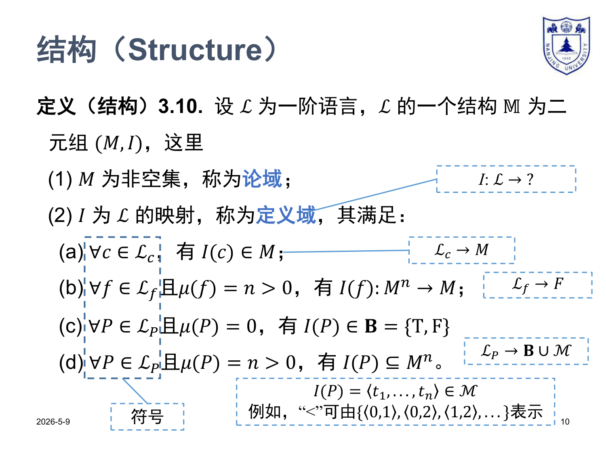
核心定义（定义 3.10）
固定一阶语言 ℒ。ℒ 的结构 𝕄 = 二元组 (M, I)：
- M（论域 / domain）：非空集合，变元在这里取值。白话：你在哪个世界里讨论问题。
- I（解释 / interpretation）：把 ℒ 的非逻辑符号映射到这个世界里的实物。
I 的四条要求（按符号种类分）
| 符号种类 | I 把它送到哪 | 白话 |
|---|---|---|
| (a) 常元 c | I(c) ∈ M | 常元 → 论域里的一个固定元素 |
| (b) n 元函数符 f | I(f) : Mⁿ → M | 函数符 → 真函数 |
| (c) 0 元谓词 P | I(P) ∈ 𝐁={T,F} | 0 元谓词 = 命题，给个真值 |
| (d) n 元谓词 P (n≥1) | I(P) ⊆ Mⁿ | n 元谓词 → 一个 n 元关系 |
具体例子：初等算术语言 𝒜 的标准模型 ℕ
𝒜 的非逻辑符号：常元 {0}，函数符 {S, +, ·}（S 是 1 元，+ 和 · 是 2 元），谓词符 {<}（2 元）。
取 N = {0,1,2,…}（自然数集），定义解释 I：
这样得到的 ℕ = (N, I) 称为初等算术的标准模型。
< 在 ℕ 上"，就是列出所有 (a,b) 满足 a<b 的组成的集合。群论语言 𝔊 的例子（对照）
𝔊 = ({e}, {·, ⁻¹}, ∅)（一个常元 e，二元运算 ·，一元运算 ⁻¹，没有谓词）。一个 𝔊-结构就是一个具体的群，比如整数加群 (ℤ, +, 0, −·)：M=ℤ，I(e)=0，I(·)=+，I(⁻¹)=负号。同一个语言可以有无穷多种结构。
累积幻灯片说明
< 的具体关系列举。我只讲终态 p10，前面 8 页在侧栏合并。记号约定 & "M 代表 𝕄"
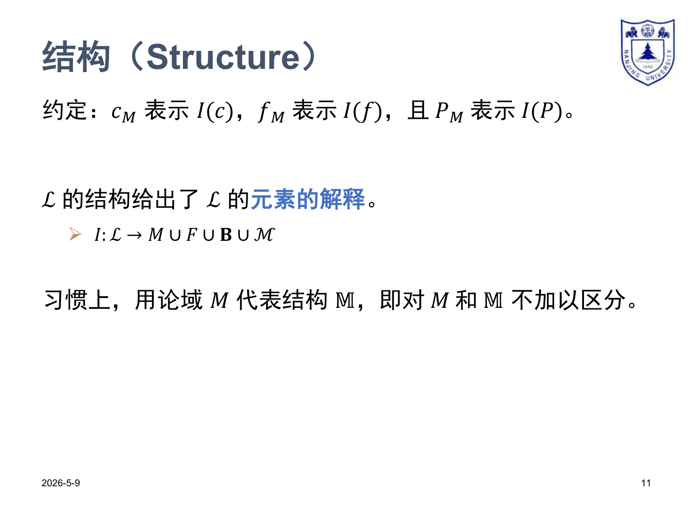
下标约定
为了书写方便，I(c)、I(f)、I(P) 分别简记为 c_M、f_M、P_M。下标 M 提示这是"在结构 𝕄 中的解释"。
I 的总像
把所有解释合起来看，I 的取值范围是：
其中 F 表 M 上各阶函数的集合，𝓜 表 M 上各阶关系的集合。这一行只是把上面四条要求合并写。
滥用记号：M 代表 𝕄
项 vs 公式 ── 两层归纳，次序不能颠倒
下一节起会同时定义两种"解释"。请先把它们的类型分清：
| 项的解释 | 公式的解释 | |
|---|---|---|
| 记号 | tM[σ] | AM[σ] |
| 取值集合 | ∈ M（论域元素） | ∈ 𝐁 = {T, F} |
| 归纳基础 | 变元、常元 | 原子公式 P(…)、t₁≐t₂ |
| 归纳步骤 | 函数项 f(t₁,…,tₙ) | ¬, ∧/∨/→, ∀x, ∃x |
P(t₁,…,tₙ) ——它的真假要看 (t₁M[σ],…,tₙM[σ]) ∈ P_M。所以你必须先把里面每个项算成论域元素，才能拿去查关系 P_M。次序错了就无意义。形象比喻
把 tM[σ] 想成"表达式求值器"，把 AM[σ] 想成"真值判定器"。求值器吐出来的是数（M 的元素），判定器吐出来的是真假。第二个调用第一个。
赋值 σ 与模型 (𝕄, σ)
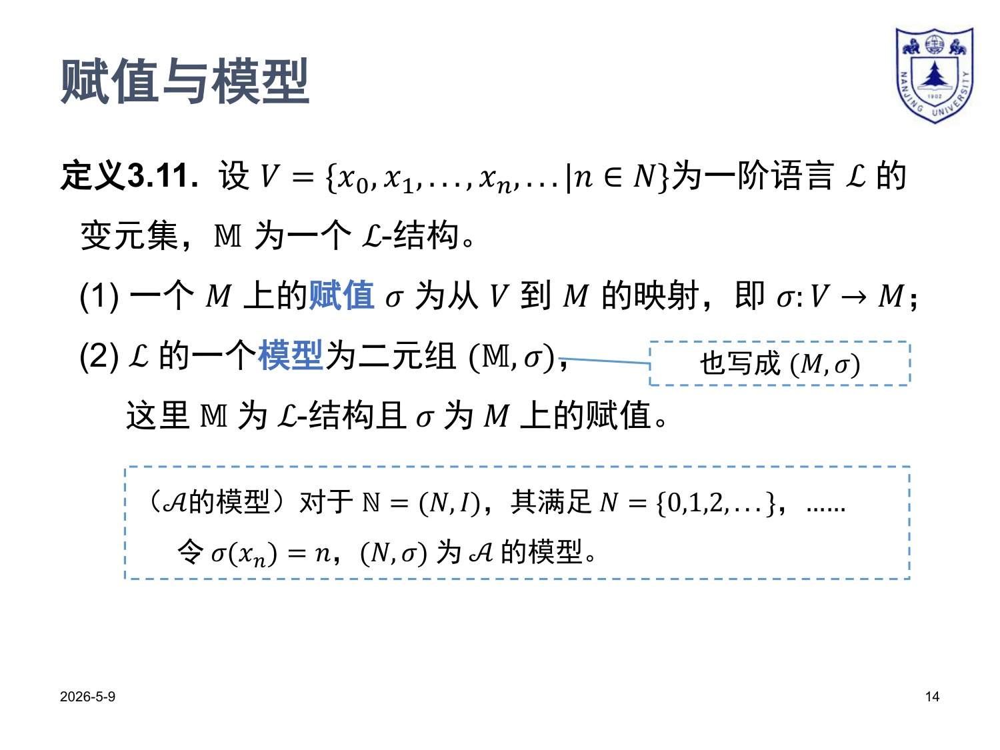
定义 3.11
- 赋值 σ：从变元集 V={x₀,x₁,…} 到论域 M 的函数 σ: V→M。
白话：给每个变元符指一个论域里的具体值。 - 模型：二元组 (𝕄, σ)，结构 + 赋值，也写成 (M, σ)。
𝒜 标准模型上的一个常用赋值
对 ℕ = (N, I)，取 σ(xₙ) = n。这个 σ 在后面大量例题中默认使用——记法："令 σ(xₙ)=n"。这样 x₀↦0、x₁↦1、x₇↦7…。
σ[x:=a] 的几何直观 ── 钉一个变元，其他不变
下一页会引入一个超级核心的记号 σ[x:=a]。先看一个图：
把 σ 想成一张"变元-值"对照表：
那么 σ[x₃ := 99] 就是：
只把第 3 行覆盖成 99，其他都不动。
定义 3.12：σ[x:=a] 的精确写法
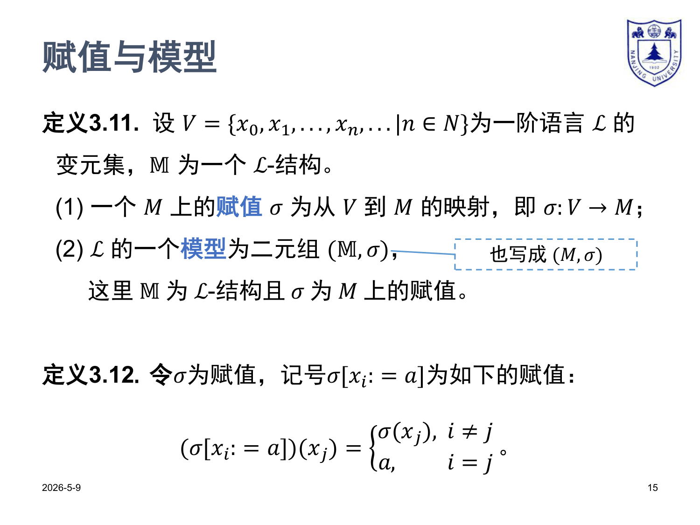
形式定义：
就是分两种情况：问的变元下标和被覆盖的不一样→原样返回；一样→返回新值 a。完全对应上一页的图。
定义 3.13：项的解释 tM[σ]
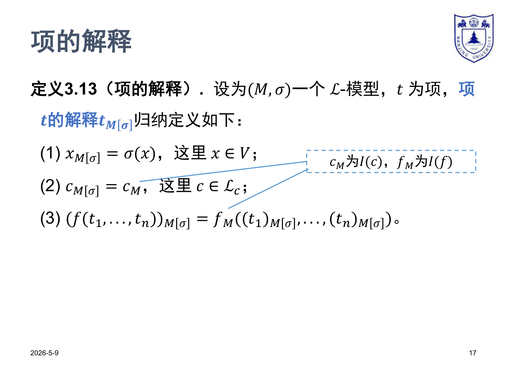
归纳定义（按项的结构）
| 项的形状 | 解释 | 白话 |
|---|---|---|
| 变元 x | xM[σ] = σ(x) | 变元的值=查赋值 |
| 常元 c | cM[σ] = cM | 常元的值=结构里固定的实物（不依赖 σ） |
| 函数项 f(t₁,…,tₙ) | = fM((t₁)M[σ],…,(tₙ)M[σ]) | 先把每个子项算成元素，再用 f_M 这个真函数去算 |
下一页用 𝒜 标准模型走一个具体例子，你看一遍就清楚了。
项解释例：1 + suc(7) = 9
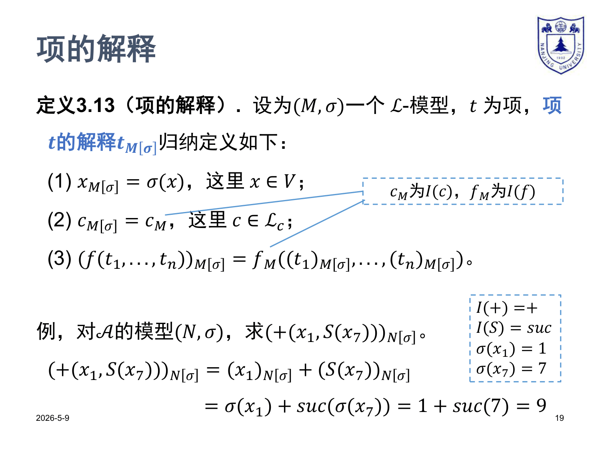
题目
在 𝒜 的标准模型 (N, σ)，其中 σ(xₙ)=n，求项 +(x₁, S(x₇)) 的解释。
逐步展开（项归纳）
(+(x₁, S(x₇)))_N[σ] = +_N( (x₁)_N[σ], (S(x₇))_N[σ] ) # 规则 3：拆函数项 = σ(x₁) + (S(x₇))_N[σ] # x₁ 用规则 1, +_N=+ = 1 + suc((x₇)_N[σ]) # S(x₇) 拆开, S_N=suc = 1 + suc(σ(x₇)) # x₇ 用规则 1 = 1 + suc(7) = 1 + 8 = 9
引理 3.14：项的解释一定落在 M 里
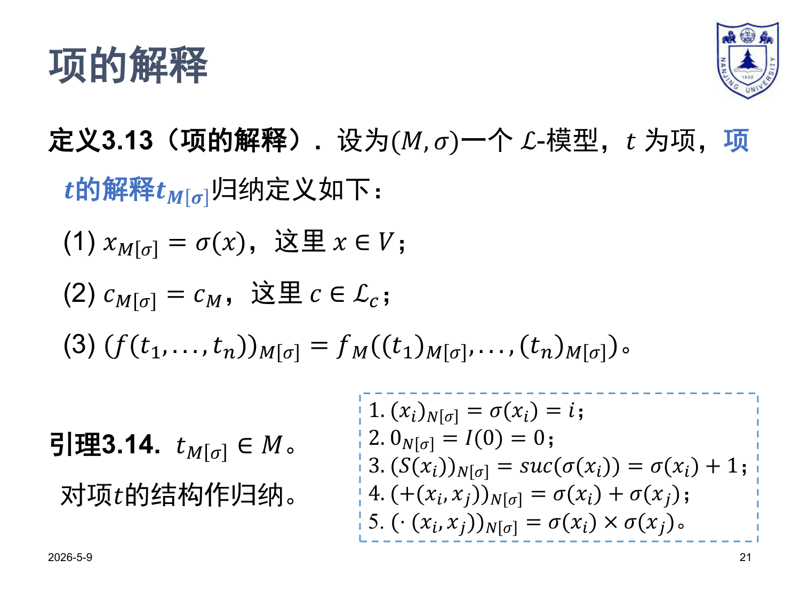
引理
对任意项 t、任意模型 (𝕄, σ)：tM[σ] ∈ M。
证明（对项结构归纳）
- 基础：t 是变元 x 时，tM[σ] = σ(x)，由 σ:V→M 立得 ∈ M。t 是常元 c 时，tM[σ] = cM = I(c) ∈ M（定义 3.10(a)）。
- 归纳：t = f(t₁,…,tₙ) 时，由归纳假设 (tᵢ)M[σ] ∈ M。由定义 3.10(b) 知 fM:Mⁿ→M，所以代入得 tM[σ] = fM(…) ∈ M。
右边累积框 (1)–(5) 给出了 𝒜 标准模型上的具体计算结果，比如 (S(xᵢ))_N[σ] = σ(xᵢ)+1。和上一页的例子是一回事。
命题（0 元谓词）的解释
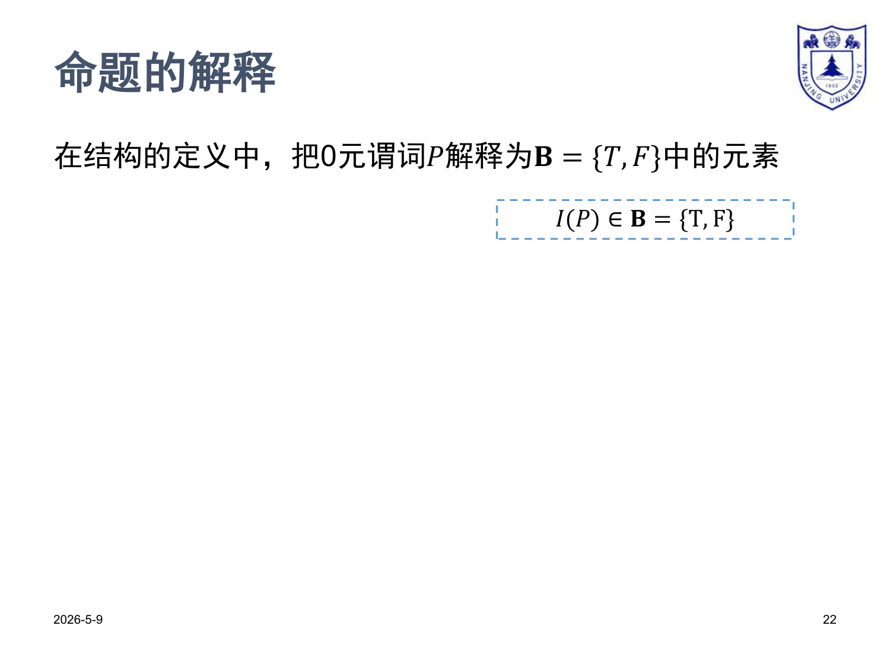
结构定义里已经规定：0 元谓词 P 的解释 I(P) ∈ 𝐁 = {T,F}。所以一个 0 元谓词在任何模型下直接就是 T 或 F——和命题逻辑里"原子命题"的角色完全一样。
联结词解释 (1)：¬ 和 ∧
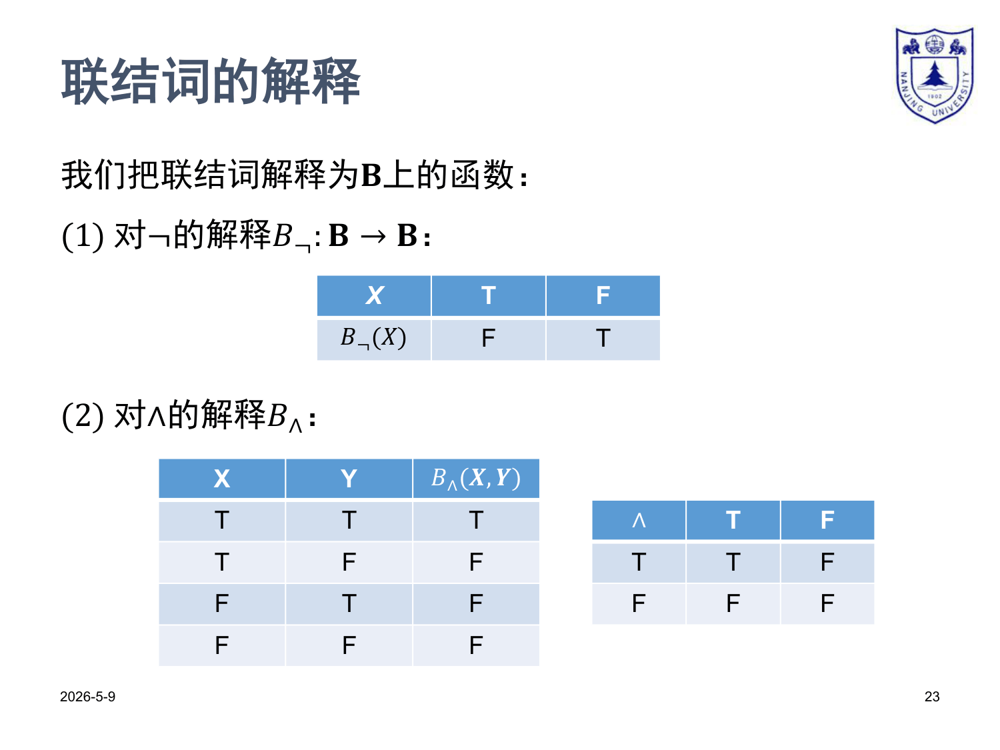
把联结词解释成 𝐁 上的真值函数 B¬, B∧, B∨, B→，跟命题逻辑完全相同。这里只是换了符号：
真值表你已经背熟了，跳过即可。
联结词解释 (2)：∨ 和 → · "与命题逻辑一致"
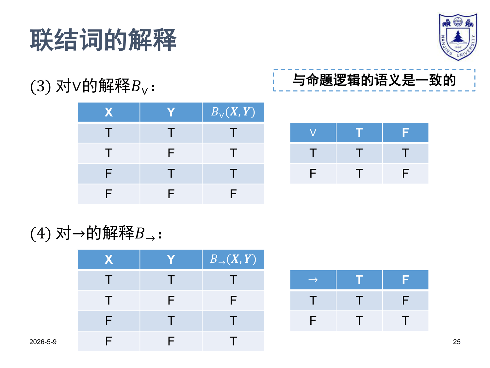
关键提示就一句：联结词的语义与命题逻辑完全相同。区别只在一阶逻辑里联结词可以作用在"含变元的原子"上，但联结词本身的真值表没动。
定义 3.15：公式的解释 AM[σ] ── 全章核心定义
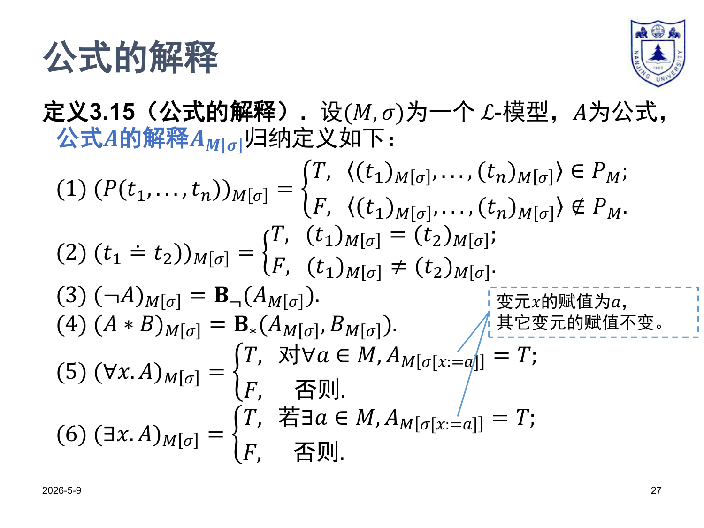
对公式 A 按结构归纳定义 AM[σ] ∈ 𝐁。六条规则：
| 公式形状 | 解释 | 白话 |
|---|---|---|
| (1) P(t₁,…,tₙ) | T 当 ⟨(t₁)M[σ],…⟩ ∈ P_M；否则 F | 先把项算出来，再查 P_M 这张关系表里有没有这个组 |
| (2) t₁ ≐ t₂ | T 当 (t₁)M[σ] = (t₂)M[σ]；否则 F | 等词 ≐：算出来在 M 里相等就真 |
| (3) ¬A | B¬(AM[σ]) | 查 ¬ 的真值表 |
| (4) A * B | B*(AM[σ], BM[σ]) | * 是 ∧/∨/→ 任一，查二元真值表 |
| (5) ∀x.A | T 当 ∀a∈M, AM[σ[x:=a]] = T；否则 F | 遍历整个论域，每个 a 都使内部真才整体真 |
| (6) ∃x.A | T 当 ∃a∈M, AM[σ[x:=a]] = T；否则 F | 找到一个 a 让内部真即可 |
≐ 是对象语言的二元谓词；右边的 = 是元语言里"两个论域元素是同一个"——一个是公式里的字符，一个是数学陈述。看到 ≐ 渲染异常请用 Chrome。下面一页就拿这条规则跑一个完整例子。
公式解释例：∀x₃.(x₃ < x₁ + x₄) 在标准模型上的求值
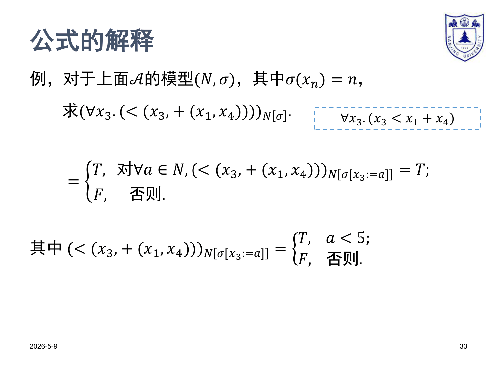
题目
𝒜 标准模型 ℕ, σ(xₙ)=n。求 (∀x₃. (<(x₃, +(x₁, x₄))))N[σ]，可读作 ∀x₃.(x₃ < x₁+x₄)。
分两层展开
外层 ∀x₃（用规则 (5)）：值为 T 当且仅当 对所有 a ∈ N，把 σ 在 x₃ 处覆盖成 a 后，内部公式 (x₃ < x₁+x₄)N[σ[x₃:=a]] = T。
内层 x₃ < x₁ + x₄（谓词 < 用规则 (1)）：值为 T 当且仅当 ⟨(x₃)N[σ[x₃:=a]], (+(x₁,x₄))N[σ[x₃:=a]]⟩ ∈ <N。
把每个项算出来
(x₃)_N[σ[x₃:=a]] = (σ[x₃:=a])(x₃) = a # 关键：被覆盖成 a (x₁)_N[σ[x₃:=a]] = (σ[x₃:=a])(x₁) = σ(x₁) = 1 # x₁ 没被覆盖 (x₄)_N[σ[x₃:=a]] = (σ[x₃:=a])(x₄) = σ(x₄) = 4 # x₄ 没被覆盖 (+(x₁,x₄))_N[σ[x₃:=a]] = 1 + 4 = 5
所以内层等价于：⟨a, 5⟩ ∈ <_N，即 a < 5。
整体结果
x₁, x₄ 还是用旧的 σ 值（1 和 4），所以"+ (x₁,x₄)"算出来是常数 5 与 a 无关。然后量词遍历 a，问"a < 5 是否对所有自然数成立"——很容易看出 F。∃x₃.(x₃ < x₁+x₄)，答案就是 T（取 a=0 即可）。同样的赋值，量词不同，答案完全相反。引理 3.16'：公式解释一定是真假之一
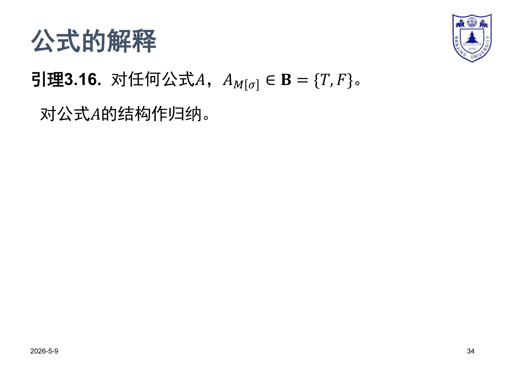
对任何公式 A，AM[σ] ∈ 𝐁 = {T,F}。证明思路：对公式结构作归纳，每一条规则要么直接给出 T/F，要么经 B¬,B* 这些真值函数（值域 ⊆ 𝐁）。
⊨ 符号家族总览表 ── 一图看清五个层级
下面几节会冒出一堆带 ⊨ 的记号，提前对照清楚：
| 记号 | 读法 | 含义 | 谁在变 |
|---|---|---|---|
| AM[σ] = T | "A 在 M 里 σ 下值为 T" | 语义解释的取值 | 固定 M, σ, A |
| M ⊨σ A | "A 在模型 (M,σ) 上可满足" | 等价于 AM[σ]=T | 固定 M, σ, A（重写） |
| M ⊨ A | "M 是 A 的模型" | 对该 M 上所有赋值 σ，M⊨σA | σ 跑遍 M 上所有赋值 |
| ⊨ A | "A 永真 / valid" | 对所有 ℒ-模型 (M,σ)，M⊨σA | M 和 σ 都跑遍 |
| Γ ⊨ A | "A 是 Γ 的语义结论" | 所有满足 Γ 的模型也满足 A | 模型跑遍，但限制在 Γ 真的那些上 |
⊨σ 是单点说话；⊨A 是对所有 (M,σ) 都成立。⊨ 是 U+22A8（双竖+横线），Edge 偶尔渲染成空白方块，请用 Chrome。否定写作 ⊭（U+22AD）。定义 3.15'：用 ⊨σ 重写的等价定义
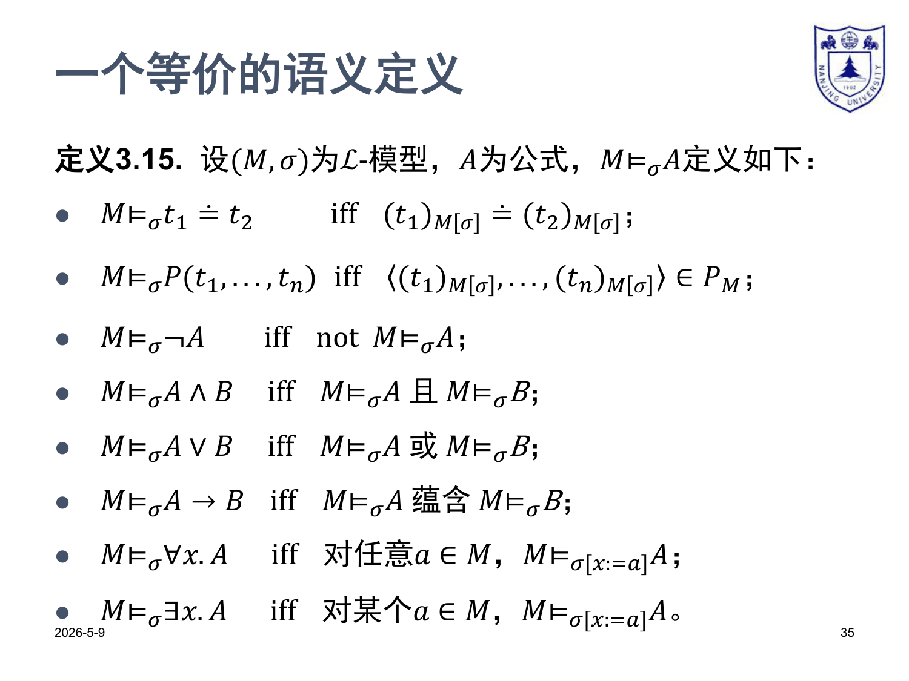
本质就是把定义 3.15 用 M ⊨σ A 代替 AM[σ] = T 重新写一遍，更接近逻辑文献的习惯写法。
| 公式 | ⊨σ 形式 |
|---|---|
| t₁ ≐ t₂ | iff (t₁)M[σ] = (t₂)M[σ] |
| P(t₁,…,tₙ) | iff ⟨…⟩ ∈ P_M |
| ¬A | iff not M⊨σA |
| A∧B | iff M⊨σA 且 M⊨σB |
| A∨B | iff M⊨σA 或 M⊨σB |
| A→B | iff M⊨σA 蕴含 M⊨σB |
| ∀x.A | iff 对任意 a∈M, M⊨σ[x:=a]A |
| ∃x.A | iff 对某个 a∈M, M⊨σ[x:=a]A |
⊨σ 形式，因为 ¬, ∧, → 的语义可以直接读作"否定 / 且 / 蕴含"，更像数学陈述。引理 3.16：公式真值只看自由变元
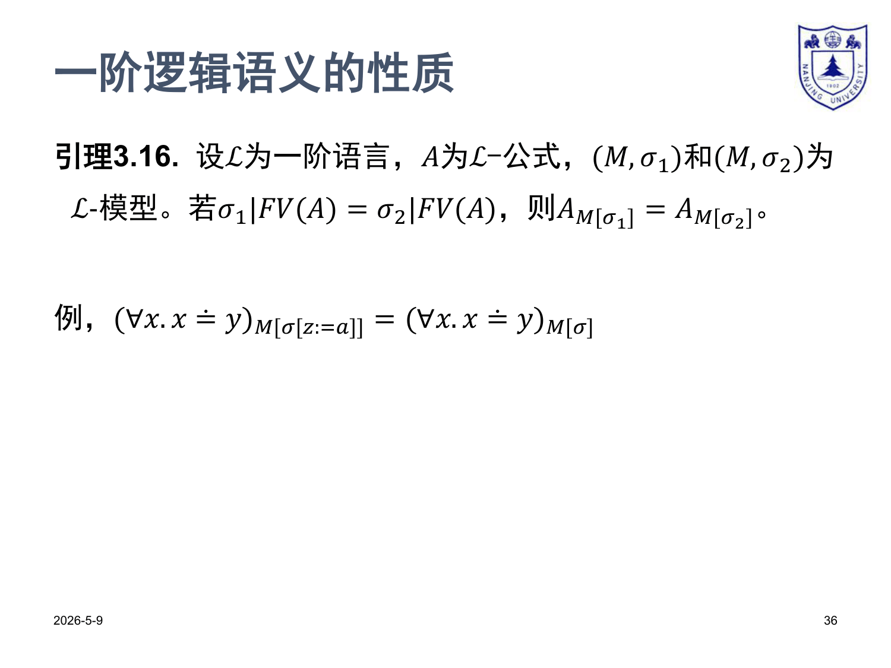
引理
设 (M, σ₁), (M, σ₂) 是 ℒ-模型。若 σ₁ 和 σ₂ 在 FV(A) 上相同（记 σ₁|FV(A) = σ₂|FV(A)），则 AM[σ₁] = AM[σ₂]。
书上的小例
(∀x. x ≐ y)M[σ[z:=a]] = (∀x. x ≐ y)M[σ]。
因为 FV(∀x. x≐y) = {y}，里面没有 z；所以把 σ 在 z 处改成 a 完全不影响这个公式的值。
接下来 5 页 (p38–p42) 是完整的归纳证明。这是本章最详细的结构归纳示范，强烈建议跟着走一遍。
证明 (1/5)：先对项归纳证 (*)
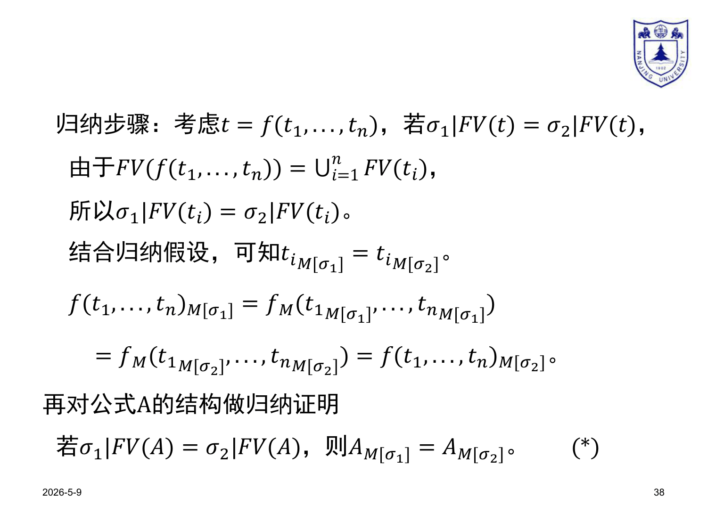
分两层归纳
第一步先证明项版本（记为 (*)）：
项归纳
- 基础：t 为变元 x 时，FV(t)={x}，所以 σ₁(x)=σ₂(x)，故 tM[σ₁]=σ₁(x)=σ₂(x)=tM[σ₂]。t 为常元时 FV(t)=∅，两边都等于 cM。
- 归纳假设：对 t₁,…,tₙ 都有 (*)。
- 归纳步骤：t = f(t₁,…,tₙ) 时，FV(f(t₁,…,tₙ)) = ⋃ FV(tᵢ)。条件 σ₁|FV(t)=σ₂|FV(t) 推出 σ₁|FV(tᵢ)=σ₂|FV(tᵢ)，由 IH 知 (tᵢ)M[σ₁]=(tᵢ)M[σ₂]，故：
f(t₁,…,tₙ)_M[σ₁] = f_M((t₁)_M[σ₁],…,(tₙ)_M[σ₁]) = f_M((t₁)_M[σ₂],…,(tₙ)_M[σ₂]) # 用 IH = f(t₁,…,tₙ)_M[σ₂] ✓
证明 (2/5)：公式归纳 · 情况 1 等词
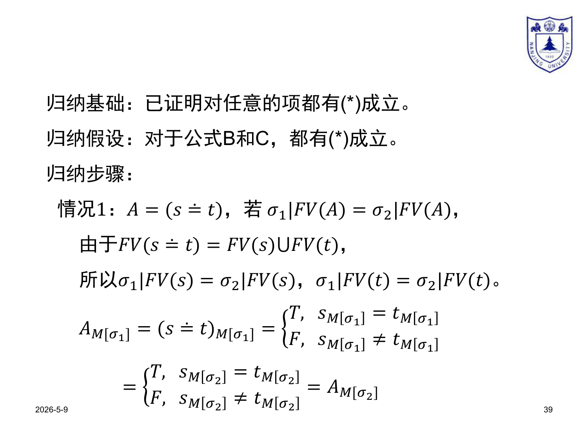
有了 (*)，再对公式 A 做结构归纳。归纳基础有两种原子公式：等词和谓词。
情况 1：A = (s ≐ t)
FV(A) = FV(s) ∪ FV(t)。前提 σ₁|FV(A)=σ₂|FV(A)，所以 σ₁|FV(s)=σ₂|FV(s) 且 σ₁|FV(t)=σ₂|FV(t)。由 (*) 得 sM[σ₁]=sM[σ₂]，tM[σ₁]=tM[σ₂]。则：
A_M[σ₁] = (s≐t)_M[σ₁]
= { T 若 s_M[σ₁] = t_M[σ₁]; F 否则 }
= { T 若 s_M[σ₂] = t_M[σ₂]; F 否则 } # 项值相等
= A_M[σ₂] ✓
证明 (3/5)：情况 2 谓词
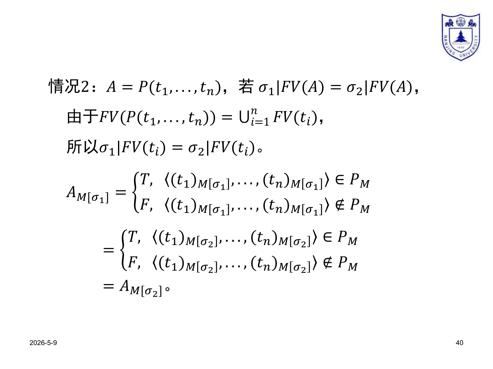
情况 2：A = P(t₁,…,tₙ)
FV(A) = ⋃ FV(tᵢ)。同样推出 σ₁|FV(tᵢ)=σ₂|FV(tᵢ)，由 (*) 得 (tᵢ)M[σ₁]=(tᵢ)M[σ₂]。代入：
A_M[σ₁] = T iff ⟨(t₁)_M[σ₁],…⟩ ∈ P_M
= T iff ⟨(t₁)_M[σ₂],…⟩ ∈ P_M # 元组逐位相等
= A_M[σ₂] ✓
证明 (4/5)：情况 3, 4 联结词
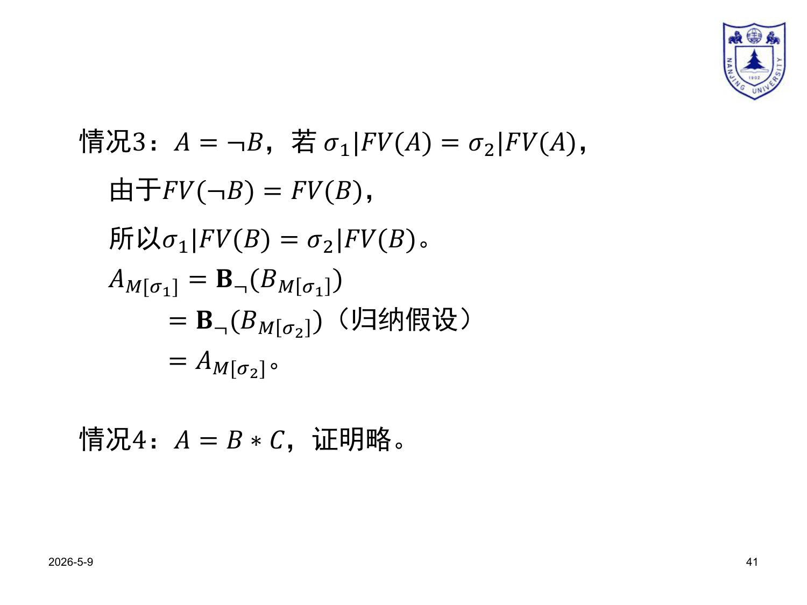
情况 3：A = ¬B
FV(¬B) = FV(B)。由 σ₁|FV(B)=σ₂|FV(B) 和 IH 得 BM[σ₁]=BM[σ₂]。代入：
A_M[σ₁] = B_¬(B_M[σ₁])
= B_¬(B_M[σ₂]) # IH
= A_M[σ₂] ✓
情况 4：A = B * C（*∈{∧,∨,→}）
书上写"略"。同理：FV(B*C)=FV(B)∪FV(C)，对 B, C 分别用 IH 得到值相等，再用真值函数 B_*。和情况 3 完全平行。
证明 (5/5)：情况 5, 6 量词 ── 最关键
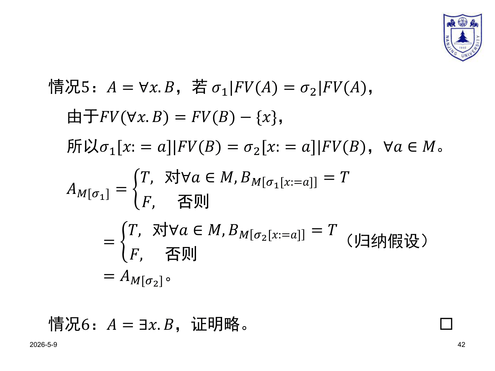
情况 5：A = ∀x.B
FV(∀x.B) = FV(B) − {x}。前提 σ₁|FV(A) = σ₂|FV(A)。关键一步：对任意 a∈M，
为什么？对 x：两边都是 a，相等。对 FV(B)−{x} 中的 y：σ₁(y)=σ₂(y)（来自前提），σ[x:=a] 不动 y，相等。
所以可以对内部 B 用 IH，得 BM[σ₁[x:=a]] = BM[σ₂[x:=a]]。再用 ∀ 的语义：
A_M[σ₁] = T iff ∀a∈M, B_M[σ₁[x:=a]] = T
= T iff ∀a∈M, B_M[σ₂[x:=a]] = T # IH 对每个 a
= A_M[σ₂] ✓
情况 6：A = ∃x.B —— 同理
∀ 与 ∃ 的语义对偶 ── 小结一张表
到这里量词的语义你已经完全清楚，但请把对偶性记在脑子里：
| 记号 | 真当且仅当 | 假当且仅当 | 反例 / 见证 |
|---|---|---|---|
| ∀x.A | 所有 a∈M, A[x:=a] 真 | 存在某个 a∈M, A[x:=a] 假 | 找一个反例 a₀ |
| ∃x.A | 存在某个 a∈M, A[x:=a] 真 | 所有 a∈M, A[x:=a] 假 | 找一个见证 a₀ |
第 1 个等价 ¬∀x.A ≃ ∃x.¬A 就是 p61 的标准例题。
定义 3.17：可满足 ── 六种含义
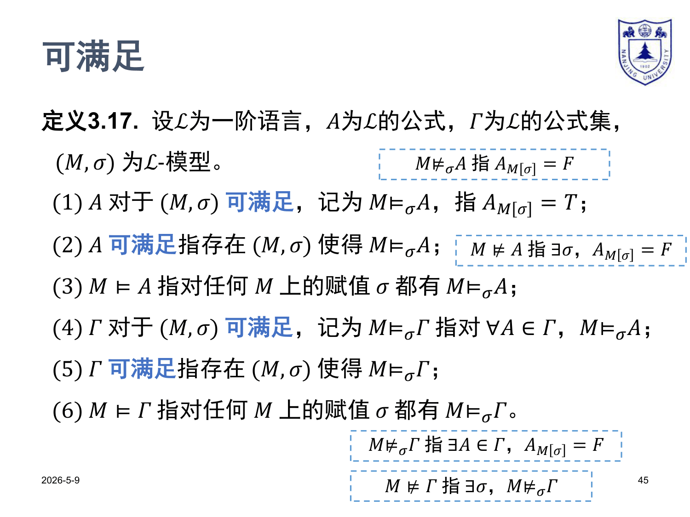
"可满足"四个字根据上下文有六种不同含义，PDF 一次列全：
| 说法 | 记号 | 含义 |
|---|---|---|
| (1) 公式 A 对 (M,σ) 可满足 | M⊨σA | AM[σ] = T |
| (2) 公式 A 可满足 | — | 存在 (M,σ) 使 M⊨σA |
| (3) M 满足 A | M⊨A | 对所有 σ 都有 M⊨σA |
| (4) 公式集 Γ 对 (M,σ) 可满足 | M⊨σΓ | ∀A∈Γ, M⊨σA |
| (5) 公式集 Γ 可满足 | — | 存在 (M,σ) 使 M⊨σΓ |
| (6) M 满足 Γ | M⊨Γ | 对所有 σ 都有 M⊨σΓ |
举例：A = (x₀ ≐ x₁)。它"可满足"（取 σ(x₀)=σ(x₁)=0）但 ℕ⊭A（取 σ(x₀)=0, σ(x₁)=1 反例）。
右下角小框：M⊭σA 表示 AM[σ]=F；M⊭A 表示存在 σ 使 AM[σ]=F；M⊭σΓ 表示 ∃A∈Γ, AM[σ]=F；M⊭Γ 表示存在 σ 使 M⊭σΓ。否定记号的层级一定要数清。
定义 3.18：永真
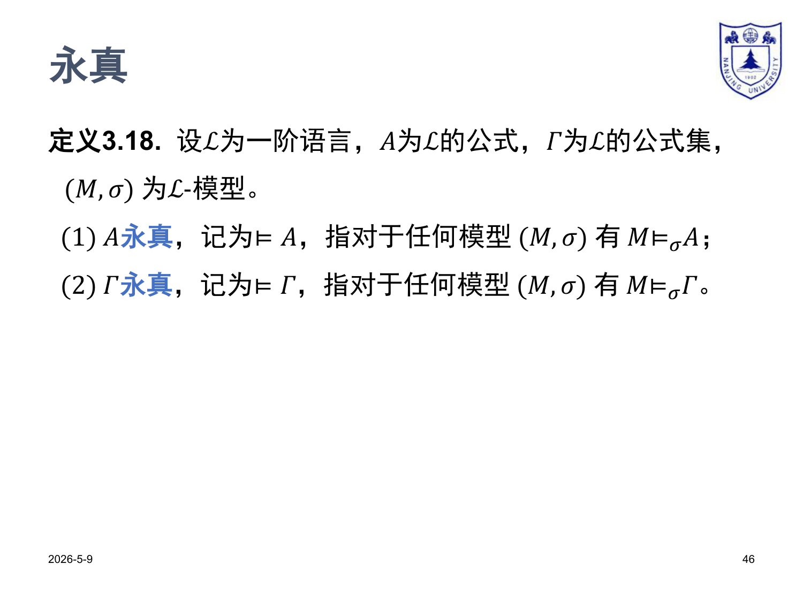
- A 永真，记 ⊨A：对所有模型 (M,σ) 都有 M⊨σA。
- Γ 永真，记 ⊨Γ：对所有模型 (M,σ) 都有 M⊨σΓ。
⊨A 之所以左侧空白，正对应"无任何假设下 A 总真"。定义 3.19：语义结论 Γ⊨A
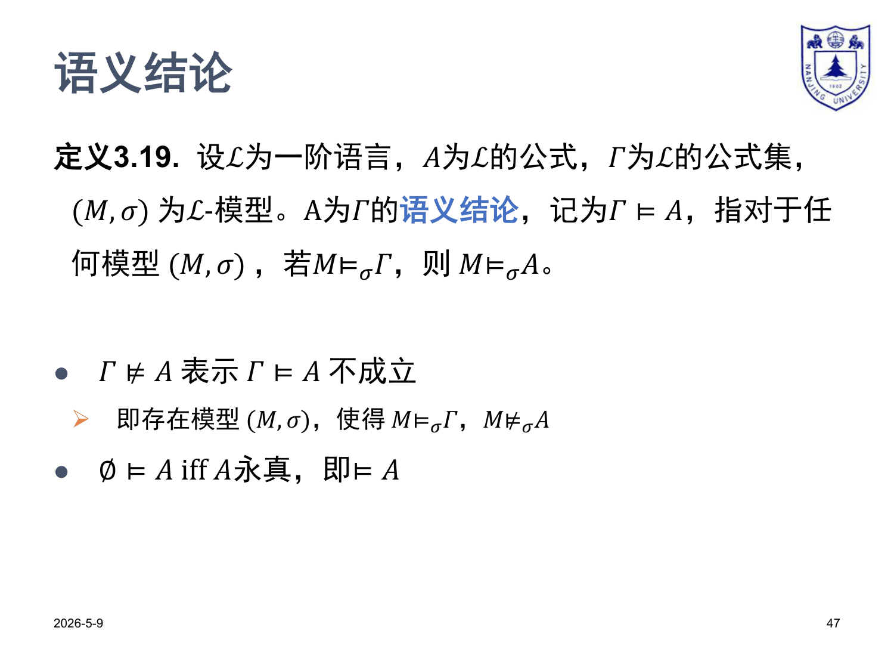
Γ⊨A：对任何模型 (M,σ)，若 M⊨σΓ，则 M⊨σA。
白话：Γ 真的模型一定也让 A 真。
- Γ⊭A：存在反例模型，使 Γ 真但 A 假。
- ∅⊨A iff A 永真，即 ⊨A。空前提下的结论恰好是永真。
三大形式逻辑基本定律
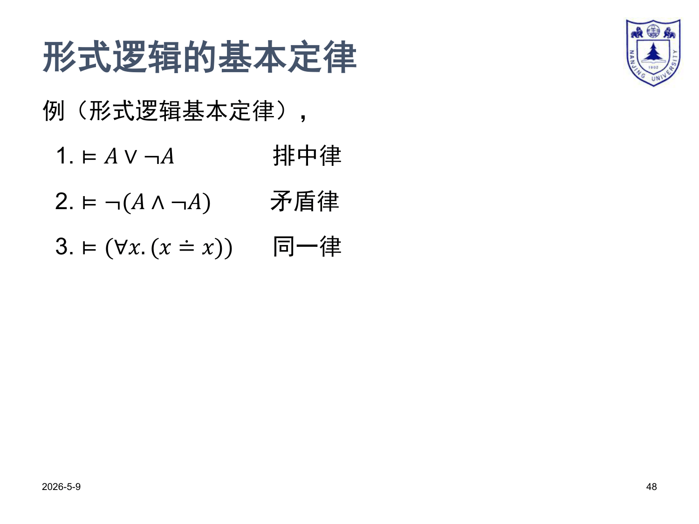
本节用反证法证三条永真公式，全是逻辑学起源时就被亚里士多德指出的"思维基本定律"：
| 名字 | 形式 | 古典动机 |
|---|---|---|
| 排中律 LEM | ⊨ A ∨ ¬A | 命题非真即假，没有第三种 |
| 矛盾律 LNC | ⊨ ¬(A ∧ ¬A) | 同时真又假不可能 |
| 同一律 | ⊨ ∀x.(x ≐ x) | 任何东西等于自己 |
AM[σ] = T 且 = F 的矛盾。排中律：⊨ A ∨ ¬A
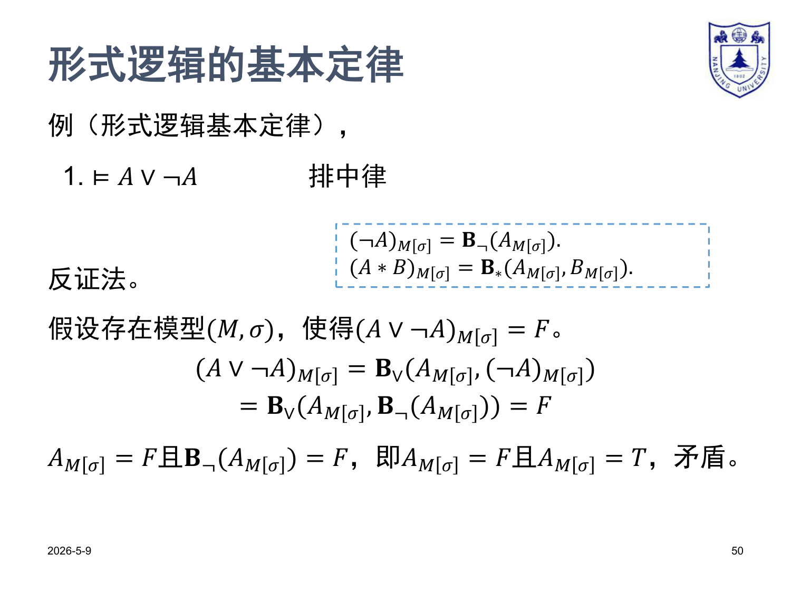
反证
假设存在模型 (M,σ) 使 (A∨¬A)M[σ] = F。展开：
(A ∨ ¬A)_M[σ] = B_∨(A_M[σ], (¬A)_M[σ])
= B_∨(A_M[σ], B_¬(A_M[σ])) = F ← 假设
由 B_∨ 真值表，只有 F∨F=F，所以 AM[σ]=F 且 B_¬(AM[σ])=F。
后者由 B_¬ 真值表给出 AM[σ]=T。
于是 AM[σ] 同时 =T 又 =F，矛盾。
★ 矛盾律：⊨ ¬(A ∧ ¬A)（自补 · PDF 略）
反证
假设存在模型 (M,σ) 使 ¬(A∧¬A)M[σ] = F。展开：
(¬(A ∧ ¬A))_M[σ] = B_¬((A ∧ ¬A)_M[σ]) = F ← 假设 故 (A ∧ ¬A)_M[σ] = T # B_¬ 真值表 即 B_∧(A_M[σ], (¬A)_M[σ]) = T # 展开 ∧ B_∧(A_M[σ], B_¬(A_M[σ])) = T # 展开 ¬A 由 B_∧ 真值表，T∧X=T 仅当 X=T，所以 A_M[σ] = T 且 B_¬(A_M[σ]) = T 后者由 B_¬ 真值表得 A_M[σ] = F 矛盾：A_M[σ] 同时 = T 且 = F。 ✓
A ∨ ¬A 和 ¬(¬A ∧ ¬¬A) ≃ ¬(¬A ∧ A) 在经典逻辑里互推。你可以验证它们的"反证树"互为镜像。同一律：⊨ ∀x.(x ≐ x)
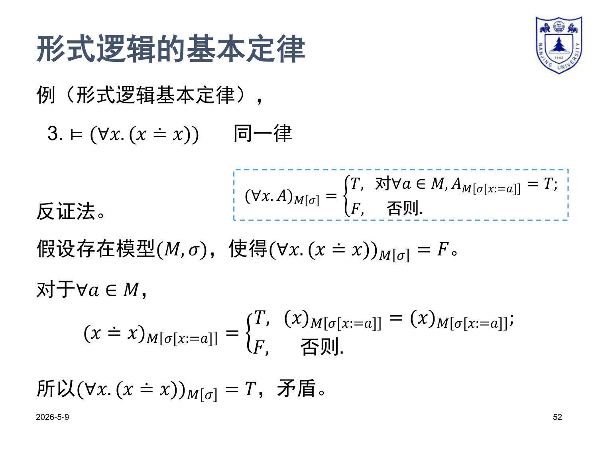
反证
假设存在模型 (M,σ) 使 (∀x.(x≐x))M[σ] = F。
由 ∀ 的语义：存在 a∈M，(x≐x)M[σ[x:=a]] = F。
但 (x≐x)M[σ[x:=a]] 要 = F，按 ≐ 的语义需要 xM[σ[x:=a]] ≠ xM[σ[x:=a]]——这是元语言的自己不等于自己，不可能。所以 (x≐x)M[σ[x:=a]] = T 对所有 a 成立，于是 (∀x.(x≐x))M[σ] = T，矛盾。
引理 3.20：Γ⊨A 等价于 Γ∪{¬A} 不可满足
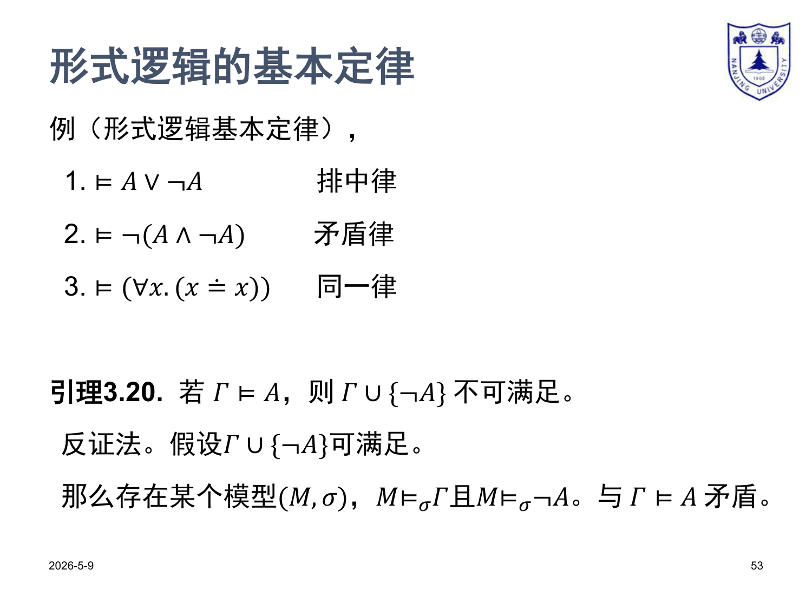
反证：假设 Γ∪{¬A} 可满足，则存在 (M,σ) 使 M⊨σΓ 且 M⊨σ¬A。后者即 AM[σ]=F。但 Γ⊨A 要求 M⊨σΓ 蕴含 M⊨σA，矛盾。
综合例：⊨ ∀x.(A→B) → (∀x.A → ∀x.B)
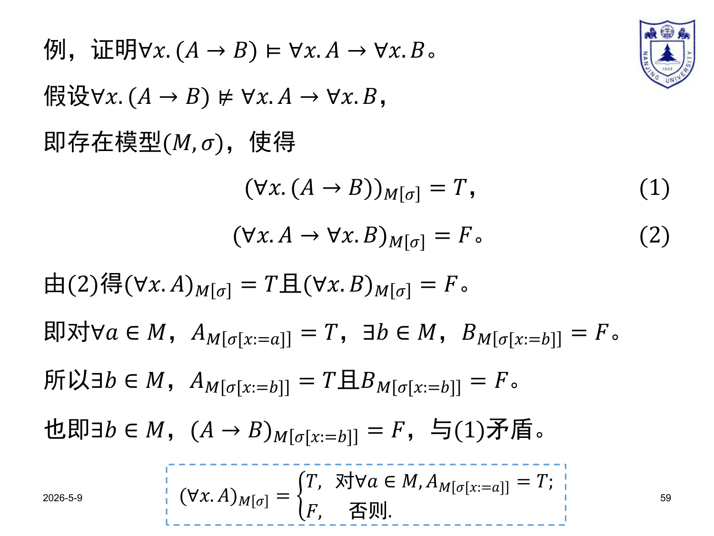
命题
证 ∀x.(A→B) ⊨ ∀x.A → ∀x.B。
白话：如果对所有 x A→B 真，且对所有 x A 真，那对所有 x B 也真。
反证 · 完整六步
假设 ∀x.(A→B) ⊭ ∀x.A→∀x.B 存在模型 (M,σ) 使： (1) (∀x.(A→B))_M[σ] = T # 假设前件真 (2) (∀x.A → ∀x.B)_M[σ] = F # 假设后件假 由 (2) 与 → 真值表： (3) (∀x.A)_M[σ] = T 且 (∀x.B)_M[σ] = F # → 唯一 F 的情况 展开 (3) 的两部分： (4) 对 ∀a ∈ M, A_M[σ[x:=a]] = T # ∀x.A=T (5) 存在 b ∈ M, B_M[σ[x:=b]] = F # ∀x.B=F 把 (4) 在 a=b 处实例化： (6) A_M[σ[x:=b]] = T 且 B_M[σ[x:=b]] = F 由 → 的真值表： (7) (A → B)_M[σ[x:=b]] = F # T → F = F 但 (1) 给出 ∀a∈M, (A→B)_M[σ[x:=a]] = T，取 a=b： (A → B)_M[σ[x:=b]] = T # 与 (7) 矛盾 ✓
∀x.A→∀x.B ⊨ ∀x.(A→B) 是不成立的！（思考反例：M=ℕ, A:=(x≐0), B:=(x≐0)；A→B 永真——但若换成 A:=(x≐0), B:=⊥ 就能造反例。）这种细微方向性是一阶逻辑题里的常见坑。定义 3.20：逻辑等价 A ≃ B · 例 ¬∀x.A ≃ ∃x.¬A
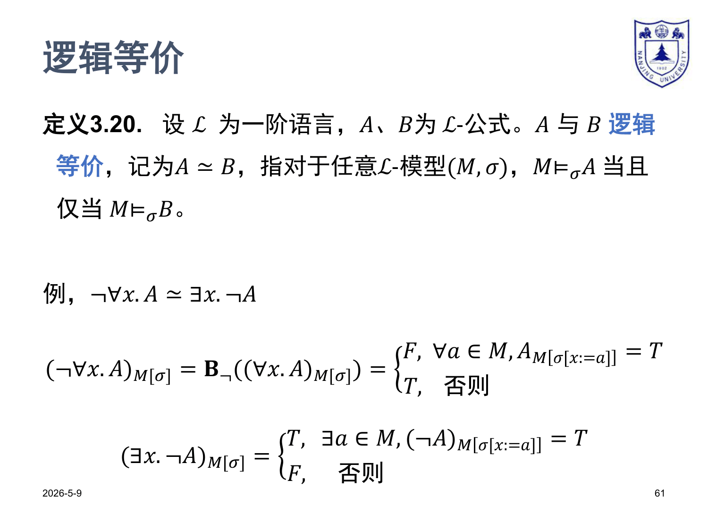
定义
A 与 B 逻辑等价，记 A ≃ B，指对任意模型 (M,σ)，M⊨σA 当且仅当 M⊨σB。
例题验证：¬∀x.A ≃ ∃x.¬A
左边展开：
(¬∀x.A)_M[σ] = B_¬((∀x.A)_M[σ])
= { F 若 ∀a∈M, A_M[σ[x:=a]] = T
T 否则 }
右边展开：
(∃x.¬A)_M[σ] = { T 若 ∃a∈M, (¬A)_M[σ[x:=a]] = T
F 否则 }
= { T 若 ∃a∈M, A_M[σ[x:=a]] = F
F 否则 }
两边都是"存在某个 a 让 A[x:=a] 假则 T，否则 F"——逻辑等价 ✓。
¬∃x.A ≃ ∀x.¬A，证法对偶。把否定"穿过"量词时，量词翻面。这是一阶演算化简的常用招。定理 3.21：等值替换
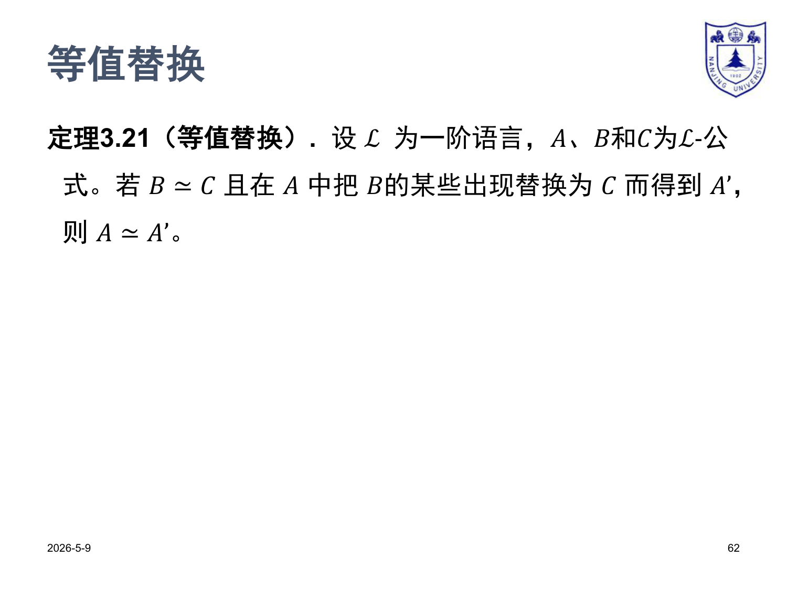
设 B ≃ C。把 A 中的若干 B 替换成 C 得到 A'，则 A ≃ A'。
常见误解 & 自检题
三个最容易栽的坑
AM[σ]=T 是单点；⊨A 是普世。看到 ⊨ 先看左侧有没有 Γ、下标有没有 σ。自检题（不交，但应该会做）
- 在 𝒜 标准模型 ℕ, σ(xₙ)=n 下，求 (∃x₂.(x₂ ≐ +(x₁,x₁)))N[σ]。
- 判断 ⊨ ∃x.(A∨B) ↔ (∃x.A ∨ ∃x.B) 是否成立。给证明或反例。
- 判断 ⊨ ∀x.(A∨B) ↔ (∀x.A ∨ ∀x.B) 是否成立。给证明或反例。
- 用引理 3.20 把"Γ∪{A}⊨B"转换为某个不可满足陈述。
参考答案：1. T（取 x₂=2，因 +(x₁,x₁) 算出 2）。2. 成立。3. 不成立（A,B 分别在不同 x 上真）。4. Γ∪{A,¬B} 不可满足。
整章地图回顾 ── 一图串联本章
从上到下读：
[第 6 章语法层]
│ 造出形式公式 A
▼
┌─────────────────────────────┐
│ ① 结构 𝕄 = (M, I) │ 定义 3.10 ─ 给非逻辑符号配实物
│ ↓ │
│ ② 赋值 σ : V → M │ 定义 3.11 ─ 给变元配值
│ ↓ │
│ ③ 项解释 t_M[σ] ∈ M │ 定义 3.13 ─ 项归纳
│ ↓ │
│ 公式解释 A_M[σ] ∈ 𝐁 │ 定义 3.15 ─ 公式归纳，含量词
│ ↓ │
│ ④ 可满足 M⊨_σA / M⊨A │ 定义 3.17 ─ 单点 / 全赋值
│ ↓ │
│ 永真 ⊨A │ 定义 3.18 ─ 全模型
│ ↓ │
│ 语义结论 Γ⊨A │ 定义 3.19 ─ 推理关系
└─────────────────────────────┘
│
▼ 本章工具：引理 3.16 (自由变元), 形式逻辑三定律,
引理 3.20 (反证), 逻辑等价 ≃, 等值替换
▼
[第 8 章：证明论 G' / 一阶演算]
—— 形式系统 ⊢A，可靠性、完备性 ⊢A iff ⊨A
下一步
- 第 8 章会给出一阶逻辑的形式证明系统（自然推理 / 希尔伯特系统 / 序列演算），并证可靠性（⊢A ⇒ ⊨A，证明系统不乱推）+完备性（⊨A ⇒ ⊢A，凡是语义真的都能证）。这两个结果合起来叫哥德尔完备性定理，是数理逻辑的两大里程碑之一。
- 之后接哥德尔不完备性定理：表达力足够强的形式系统（如算术）里有真但不可证的语句。和完备性不矛盾——不完备性讲的是特定理论的局限，而完备性讲的是一阶逻辑本身。
到这里本章语义层全部讲完。